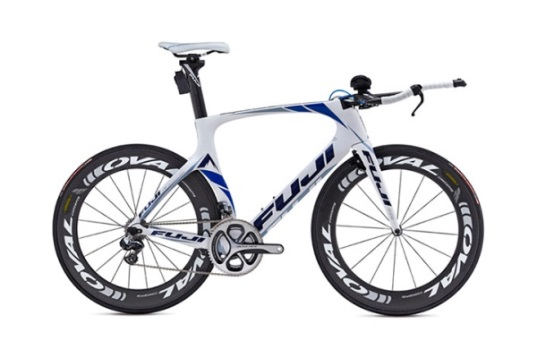
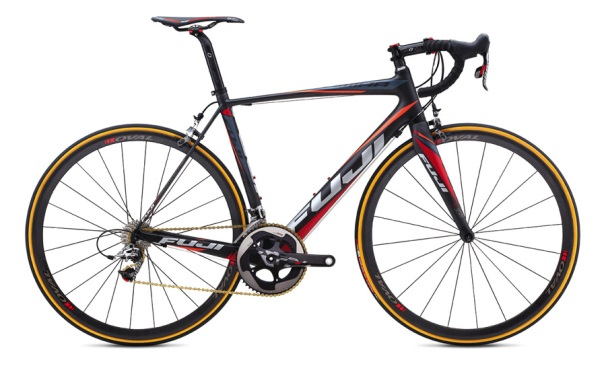
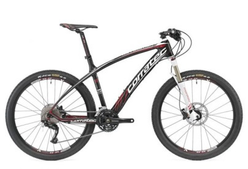
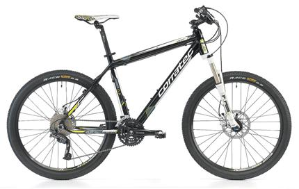
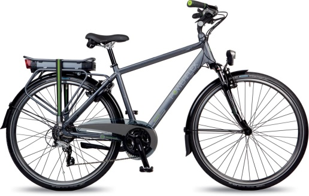

|
|
|---|---|
|
|
|
|
|
|
|
|
|
|

En av markedes desidert sterkeste sykler,
en temposyklers drøm. Sykkelen er utstyr
med topnoch utstyr. Brukes av verdenseliten
som Matt Reed og Cameron Dye.
Pris: 49.999,-

En flott landeveissykkel som har alt du er ute
etter. Denne sykkelen veier bare 6.2kg!
Pris: 34.999,-

Forskjellen mellom god og perfekt. Denne
sykkelen vil ta deg hvor du vil, når du vil
og hvor fort du vil. Ypperlig til både
konkurranse og for de som er ekstra dedikerte.
Pris: 14.199,-

Perfekt sykkel, veldesignet for rundbane og
mosjon. Lever opp til alle dine behov, både
som mosjonist og som utdøver.
En sykkel vi sterkt anbefaler.
Pris: 8.999,-

Powerflex gir deg muligheten for et ekstra dytt
opp den litt tunge bakken. En meget
tilpasninsdyktig sykkel med 24V/ 250Watt
motor og Panasonic Li-Ion 25,2 V PCB batteri.
Pris: 9.999,-